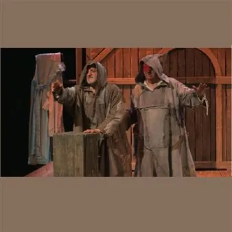

ven 16 ott · dalle 21:00
17° Festival "Marcello Mascherini" - Fradeo sol, comare luna
VENERDI’ 16 OTTOBRE ore 21.00 PASIANO DI PORDENONE – TEATRO GOZZI Compagnia Il Satiro Teatro di Paese (TV) Fradeo sol comare luna di Fulvio Ervas e Roberto Cuppone Regia di Roberto Cuppone Francesco rifiuta la spada, la restituisce al fabbro che l’ha forgiata: faccia vanghe e…
 Indicazioni
Indicazioni
- Costi e prenotazioni
- Costo non indicato · Prenotazione non indicata
- Programma
- Programma da verificare. Apri la fonte ufficiale per orari e possibili aggiornamenti.
- In caso di maltempo
- Nessuna indicazione specifica pubblicata.
- Note
- Acquisito automaticamente dalla fonte.
L’EVENTO
Descrizione completa
VENERDI’ 16 OTTOBRE ore 21.00
PASIANO DI PORDENONE – TEATRO GOZZI
Compagnia Il Satiro Teatro di Paese (TV)
Fradeo sol comare luna di Fulvio Ervas e Roberto Cuppone
Regia di Roberto Cuppone
Francesco rifiuta la spada, la restituisce al fabbro che l’ha forgiata: faccia vanghe e attrezzi per coltivare i campi. Francesco si congeda da Chiara, il suo grande amore, e lei come dono d’addio gli confeziona un saio fatto di tutte le pezze della condizione umana, un arlecchino di esperienze e di dolori. Francesco chiede agli uccelli: “Cosa posso insegnare agli uomini?” Sì perché sono gli animali oggi, che predicano a noi, ammesso che qualcuno sappia ancora capirli nella “lengua del Creator” (e se questa è il veneto, tanto meglio: capiranno anche gli animali-uomini). Francesco incontra un bambino sopravvissuto alla crociata, e per scaldarlo e consolarlo gioca con lui al presepio: statuine di amici (ancora umili animali) e di prepotenti, in ginocchio per domandargli scusa di tutte le stragi di innocenti. Francesco cieco si avvicina a Sorella Morte cantando la bellezza della vita. Francesco oggi è la rivoluzione, per qualsiasi rivoluzione ci vuole fede; e la fede “xe roba da Mati”.
IL PROGRAMMA
Programma e orari
Appuntamenti raccolti dalle fonti elencate. Dove manca un orario, non è ancora disponibile in questa scheda.
Programma pubblicato
- Dal 2026-10-16 al 2026-10-16
INFORMAZIONI UTILI
Prima di partire
- Controllare la fonte prima di partire.
ORGANIZZAZIONE